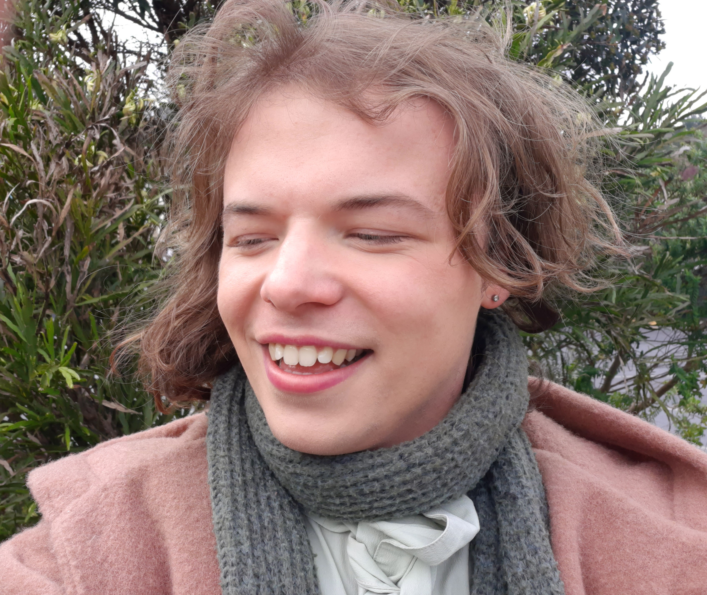

About the Project

Marina Cone
Marina Cone is the programmer and researcher for the NZ Digital Literary Heritage Project. Her work focuses on digital preservation, literary games, and experimental digital storytelling. She
Professor David Ciccoricco
Dave Ciccoricco is Professor of English at the University of Otago, and is leading the DHLP project. He specializes in the study of digital literature and electronic textuality, and that interest has facilitated the creation of the NZDHLP. He is currently writing a book about digital literature in Aotearoa New Zealand.